特别鸣谢番茄瓜皮小学弟做出的改进和优化。
更新（2019.07.20）
这两天花时间将我的博客换了一个主题，现在这个主题看着更加的炫（zhuang）酷（bi），并且响应式更友好，点起来就很舒服，功能也多很多。
主题的原地址在这里：hexo-theme-matery，它的文档写得也非常的详细，还有中英文两个版本，作者回复也很及时。效果图如下，可以看出非常合我的口味：
但是我自己使用起来还是遇到了好几个问题，经过两天的不懈摸鱼，终于基本解决了，这里分享一下。
首先先按照文档教程安装一遍主题，然后是可以正常打开的，如果你是一般使用的话，基本没啥问题了。但是我是重度强迫症，一点小毛病就看着难受，下面列举一下我遇到的问题以及解决方法。
新建文章
首先为了新建文章方便，建议将/scaffolds/post.md修改为如下代码：
---
title: {{ title }}
date: {{ date }}
top: false
cover: false
password:
toc: true
mathjax: true
summary:
tags:
categories:
---这样新建文章后不用你自己补充了，修改信息就行。
添加404页面
原来的主题没有404页面，加一个也不是什么难事。首先在/source/目录下新建一个404.md，内容如下：
---
title: 404
date: 2019-07-19 16:41:10
type: "404"
layout: "404"
description: "你来到了没有知识的荒原 :("
---然后在/themes/matery/layout/目录下新建一个404.ejs文件，内容如下：
<style type="text/css">
/* don't remove. */
.about-cover {
height: 75vh;
}
</style>
<div class="bg-cover pd-header about-cover">
<div class="container">
<div class="row">
<div class="col s10 offset-s1 m8 offset-m2 l8 offset-l2">
<div class="brand">
<div class="title center-align">
404
</div>
<div class="description center-align">
<%= page.description %>
</div>
</div>
</div>
</div>
</div>
</div>
<script>
// 每天切换 banner 图. Switch banner image every day.
$('.bg-cover').css('background-image', 'url(/medias/banner/' + new Date().getDay() + '.jpg)');
</script>“关于”页面增加简历（可选）
修改/themes/matery/layout/about.ejs，找到<div class="card">标签，然后找到它对应的</div>标签，接在后面新增一个card，语句如下：
<div class="card">
<div class="card-content">
<div class="card-content article-card-content">
<div class="title center-align" data-aos="zoom-in-up">
<i class="fa fa-address-book"></i> <%- __('myCV') %>
</div>
<div id="articleContent" data-aos="fade-up">
<%- page.content %>
</div>
</div>
</div>
</div>这样就会多出一张card，然后可以在/source/about/index.md下面写上你的简历了，当然这里的位置随你自己设置，你也可以把简历作为第一个card。
解决mathjax与代码高亮的冲突
如果你按照教程安装了代码高亮插件hexo-prism-plugin，单独使用是没有问题的，但如果你又使用了mathjax，并且按照网上教程，安装kramed插件并修改了js文件里的正则表达式（为了解决markdown和mathjax的语法冲突），好了，那你的代码就无法高亮了。解决方法很简单，别用kramed插件了，还用原来自带的marked插件，直接改它的正则表达式就行了，改法还和网上一样。
增加建站时间
修改/themes/matery/layout/_partial/footer.ejs文件，在最后加上
<script language=javascript>
function siteTime() {
window.setTimeout("siteTime()", 1000);
var seconds = 1000;
var minutes = seconds * 60;
var hours = minutes * 60;
var days = hours * 24;
var years = days * 365;
var today = new Date();
var todayYear = today.getFullYear();
var todayMonth = today.getMonth() + 1;
var todayDate = today.getDate();
var todayHour = today.getHours();
var todayMinute = today.getMinutes();
var todaySecond = today.getSeconds();
/* Date.UTC() -- 返回date对象距世界标准时间(UTC)1970年1月1日午夜之间的毫秒数(时间戳)
year - 作为date对象的年份，为4位年份值
month - 0-11之间的整数，做为date对象的月份
day - 1-31之间的整数，做为date对象的天数
hours - 0(午夜24点)-23之间的整数，做为date对象的小时数
minutes - 0-59之间的整数，做为date对象的分钟数
seconds - 0-59之间的整数，做为date对象的秒数
microseconds - 0-999之间的整数，做为date对象的毫秒数 */
var t1 = Date.UTC(2017, 09, 11, 00, 00, 00); //北京时间2018-2-13 00:00:00
var t2 = Date.UTC(todayYear, todayMonth, todayDate, todayHour, todayMinute, todaySecond);
var diff = t2 - t1;
var diffYears = Math.floor(diff / years);
var diffDays = Math.floor((diff / days) - diffYears * 365);
var diffHours = Math.floor((diff - (diffYears * 365 + diffDays) * days) / hours);
var diffMinutes = Math.floor((diff - (diffYears * 365 + diffDays) * days - diffHours * hours) / minutes);
var diffSeconds = Math.floor((diff - (diffYears * 365 + diffDays) * days - diffHours * hours - diffMinutes * minutes) / seconds);
document.getElementById("sitetime").innerHTML = "本站已运行 " +diffYears+" 年 "+diffDays + " 天 " + diffHours + " 小时 " + diffMinutes + " 分钟 " + diffSeconds + " 秒";
}/*因为建站时间还没有一年，就将之注释掉了。需要的可以取消*/
siteTime();
</script>然后在合适的地方（比如copyright声明后面）加上下面的代码就行了：
<span id="sitetime"></span>修改不蒜子初始化计数
因为不蒜子至今未开放注册，所以没办法在官网修改初始化，只能自己动手了。和上一条一样，在/themes/matery/layout/_partial/footer.ejs文件最后加上：
<script>
$(document).ready(function () {
var int = setInterval(fixCount, 50); // 50ms周期检测函数
var pvcountOffset = 80000; // 初始化首次数据
var uvcountOffset = 20000;
function fixCount() {
if (document.getElementById("busuanzi_container_site_pv").style.display != "none") {
$("#busuanzi_value_site_pv").html(parseInt($("#busuanzi_value_site_pv").html()) + pvcountOffset);
clearInterval(int);
}
if ($("#busuanzi_container_site_pv").css("display") != "none") {
$("#busuanzi_value_site_uv").html(parseInt($("#busuanzi_value_site_uv").html()) + uvcountOffset); // 加上初始数据
clearInterval(int); // 停止检测
}
}
});
</script>然后把上面几行有段代码：
<% if (theme.busuanziStatistics && theme.busuanziStatistics.totalTraffic) { %>
<span id="busuanzi_container_site_pv">
<i class="fa fa-heart-o"></i>
本站总访问量 <span id="busuanzi_value_site_pv" class="white-color"></span>
</span>
<% } %>
<% if (theme.busuanziStatistics && theme.busuanziStatistics.totalNumberOfvisitors) { %>
<span id="busuanzi_container_site_uv">
人次, 访客数 <span id="busuanzi_value_site_uv" class="white-color"></span> 人.
</span>
<% } %>修改为：
<% if (theme.busuanziStatistics && theme.busuanziStatistics.totalTraffic) { %>
<span id="busuanzi_container_site_pv" style='display:none'>
<i class="fa fa-heart-o"></i>
本站总访问量 <span id="busuanzi_value_site_pv" class="white-color"></span>
</span>
<% } %>
<% if (theme.busuanziStatistics && theme.busuanziStatistics.totalNumberOfvisitors) { %>
<span id="busuanzi_container_site_uv" style='display:none'>
人次, 访客数 <span id="busuanzi_value_site_uv" class="white-color"></span> 人.
</span>
<% } %>其实就是增加了两个style='display:none'而已。
前言
去年9月的时候开始搭建了第一个自己的独立博客，到现在也稍微像模像样了。很多小伙伴应该也想过搭建一个自己的博客，网上也有一堆详细教程。我在此稍稍总结一下具体的搭建步骤，另外网上很少有修改博客源码的个性化教程，我就稍稍分享一下我的一些修改经验，更多的个性化操作需要你自己以后去摸索。
具体效果可以参观我的博客：godweiyang.com，欢迎大家支持。
我不是一个前端程序员，有些东西不是很了解，说的不好大家见谅。
首先要了解一下我们搭建博客要用到的框架。Hexo是高效的静态站点生成框架，它基于Node.js。通过Hexo，你可以直接使用Markdown语法来撰写博客。相信很多小伙伴写工程都写过README.md文件吧，对，就是这个格式的！写完后只需两三条命令即可将生成的网页上传到你的github上，然后别人就可以看到你的网页啦。是不是很简单？你无需关心网页源代码的具体细节，你只需要用心写好你的博客内容就行。
安装Node.js
首先下载稳定版Node.js，我这里给的是64位的。
安装选项全部默认，一路点击Next。
最后安装好之后，按Win+R打开命令提示符，输入node -v和npm -v，如果出现版本号，那么就安装成功了。
添加国内镜像源
如果没有梯子的话，可以使用阿里的国内镜像进行加速。
npm config set registry https://registry.npm.taobao.org安装Git
为了把本地的网页文件上传到github上面去，我们需要用到分布式版本控制工具————Git[下载地址]。
安装选项还是全部默认，只不过最后一步添加路径时选择Use Git from the Windows Command Prompt，这样我们就可以直接在命令提示符里打开git了。
安装完成后在命令提示符中输入git --version验证是否安装成功。
注册Github账号
接下来就去注册一个github账号，用来存放我们的网站。大多数小伙伴应该都有了吧，作为一个合格的程序猿（媛）还是要有一个的。
打开https://github.com/，新建一个项目，如下所示：
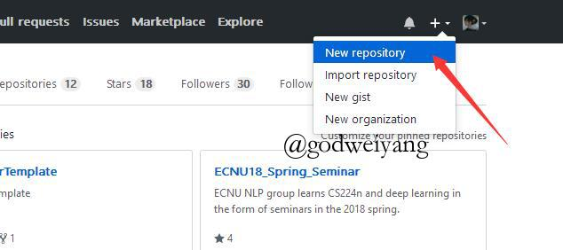
然后如下图所示，输入自己的项目名字，后面一定要加.github.io后缀，README初始化也要勾上。
然后项目就建成了，点击Settings，向下拉到最后有个GitHub Pages，点击Choose a theme选择一个主题。然后等一会儿，再回到GitHub Pages，会变成下面这样：
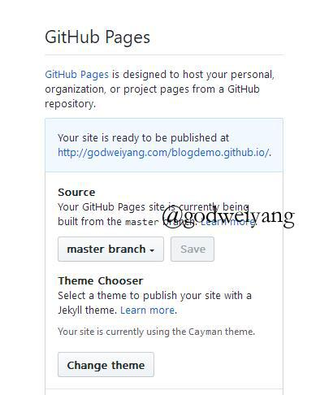
点击那个链接，就会出现自己的网页啦，效果如下：
安装Hexo
在合适的地方新建一个文件夹，用来存放自己的博客文件，比如我的博客文件都存放在D:\study\program\blog目录下。
在该目录下右键点击Git Bash Here，打开git的控制台窗口，以后我们所有的操作都在git控制台进行，就不要用Windows自带的控制台了。
定位到该目录下，输入npm i hexo-cli -g安装Hexo。会有几个报错，无视它就行。
安装完后输入hexo -v验证是否安装成功。
然后就要初始化我们的网站，输入hexo init初始化文件夹，接着输入npm install安装必备的组件。
这样本地的网站配置也弄好啦，输入hexo g生成静态网页，然后输入hexo s打开本地服务器，然后浏览器打开http://localhost:4000/，就可以看到我们的博客啦，效果如下：
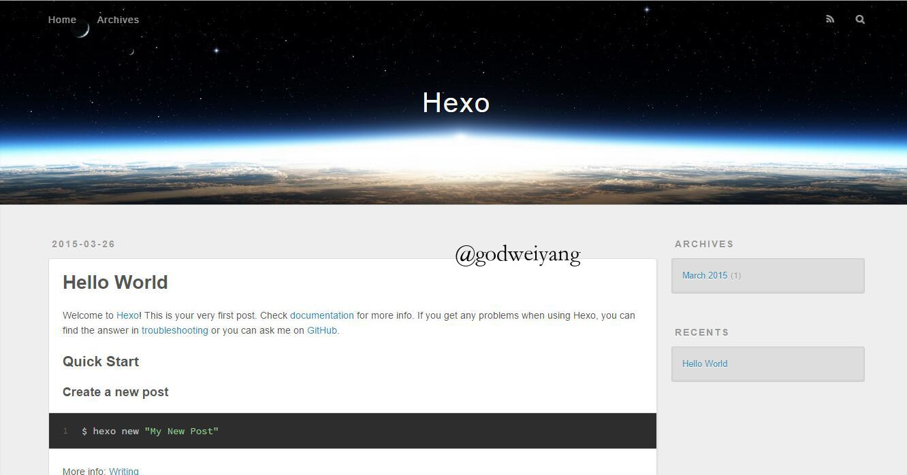
按ctrl+c关闭本地服务器。
连接Github与本地
首先右键打开git bash，然后输入下面命令：
git config --global user.name "godweiyang"
git config --global user.email "792321264@qq.com"用户名和邮箱根据你注册github的信息自行修改。
然后生成密钥SSH key：
ssh-keygen -t rsa -C "792321264@qq.com"打开github，在头像下面点击settings，再点击SSH and GPG keys，新建一个SSH，名字随便。
git bash中输入
cat ~/.ssh/id_rsa.pub将输出的内容复制到框中，点击确定保存。
输入ssh -T git@github.com，如果如下图所示，出现你的用户名，那就成功了。
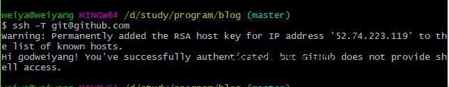
打开博客根目录下的_config.yml文件，这是博客的配置文件，在这里你可以修改与博客相关的各种信息。
修改最后一行的配置：
deploy:
type: git
repository: https://github.com/godweiyang/godweiyang.github.io
branch: masterrepository修改为你自己的github项目地址。不过你这里看到的可能与我有点不一样，因为我已经修改过主题了，所以这一步先不用管，换完主题之后记得回来修改！
写文章、发布文章
首先在博客根目录下右键打开git bash，安装一个扩展npm i hexo-deployer-git。
然后输入hexo new post "article title"，新建一篇文章。
然后打开D:\study\program\blog\source\_posts的目录，可以发现下面多了一个文件夹和一个.md文件，一个用来存放你的图片等数据，另一个就是你的文章文件啦。
编写完markdown文件后，根目录下输入hexo g生成静态网页，然后输入hexo s可以本地预览效果，最后输入hexo d上传到github上。这时打开你的github.io主页就能看到发布的文章啦。
绑定域名
现在默认的域名还是xxx.github.io，是不是很没有牌面？想不想也像我一样弄一个专属域名呢，首先你得购买一个域名，xx云都能买，看你个人喜好了。
以我的百度云为例，如下图所示，添加两条解析记录：
然后打开你的github博客项目，点击settings，拉到下面Custom domain处，填上你自己的域名，保存：
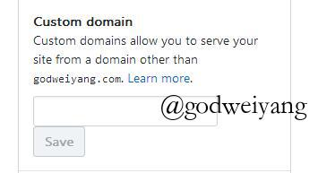
这时候你的项目根目录应该会出现一个名为CNAME的文件了。如果没有的话，打开你本地博客/source目录，我的是D:\study\program\blog\source，新建CNAME文件，注意没有后缀。然后在里面写上你的域名，保存。最后运行hexo g、hexo d上传到github。
更换主题
网上大多数主题都是github排名第一的Next主题，但是我个人不是很喜欢，我更喜欢beantech主题，地址在传送门。
首先要注意的是，这个github项目不仅包含了主题文件，还包含了hexo的各种文件。
所以首先下载下来这个项目，然后推荐将下图所有文件全部替换你原本博客根目录下的文件：
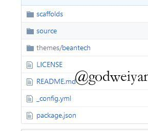
当然一般的主题和这个主题有点不一样，只含有主题文件夹，所以把整个文件夹丢到theme下就行了。
然后运行hexo clean清空所有生成的网页缓存，hexo g、hexo d。这时候新的主题网页就生成好了，博客根目录的情况应该大致如下：
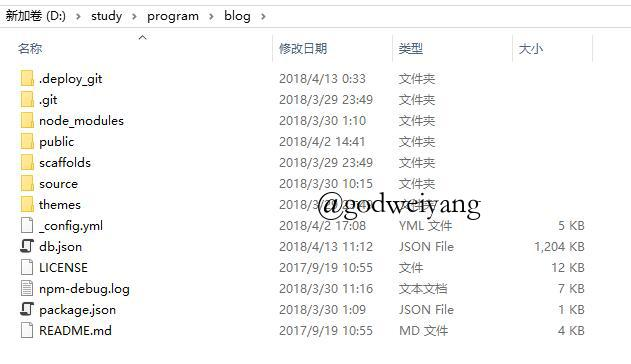
博客目录构成介绍
从上图可以看出，博客的目录结构如下：
- node_modules
- public
- scaffolds
- source
- _posts
- about
- archive
- img
- tags
- themesnode_modules是node.js各种库的目录，public是生成的网页文件目录，scaffolds里面就三个文件，存储着新文章和新页面的初始设置，source是我们最常用到的一个目录，里面存放着文章、各类页面、图像等文件，themes存放着主题文件，一般也用不到。
我们平时写文章只需要关注source/_posts这个文件夹就行了。
个性化设置及bug处理
首先打开_config.yml，根据自己需求配置，具体不说了，有注释。
修复文档分类bug
这个主题文档分类功能有个bug，一直没有得到解决，直到最近，我才发现是源文件的单词拼错了。。。
打开D:\study\program\blog\scaffolds\post.md，单词catagories改为categories。
添加畅言评论插件
主题自带了多说评论插件，但是多说已经关闭了，所以我换成了畅言评论插件。
首先你得注册一个畅言账号，地址。
然后打开如下页面，复制该段代码：
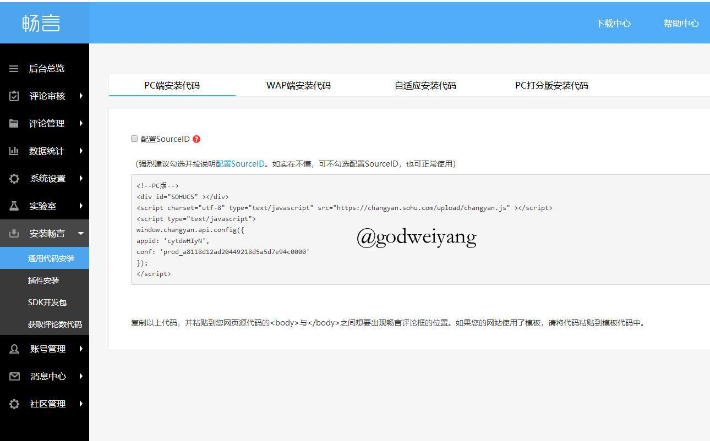
打开D:\study\program\blog\themes\beantech\layout\post.ejs，将代码粘贴到如下位置：
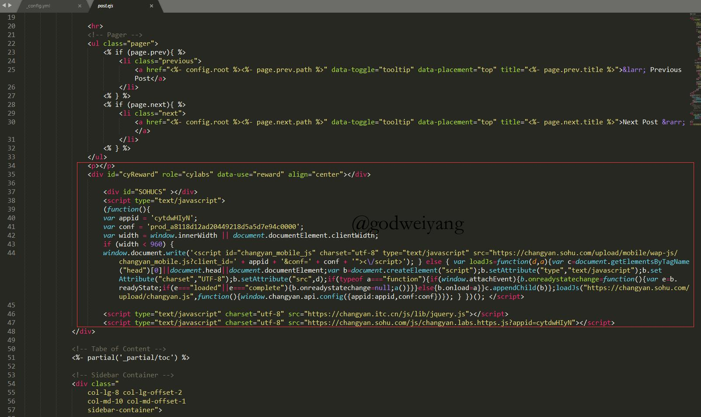
然后重新生成一下网页，可以看到效果图如下：
更多插件例如热评话题之类的，可以自行在畅言后台找到代码添加。
添加图片放大功能
首先下载zooming.js文件地址，保存在D:\study\program\blog\themes\beantech\source\js目录下。
打开D:\study\program\blog\themes\beantech\layout\post.ejs，在最下方粘贴如下代码：
<script type="text/javascript" src="/js/zooming.js"></script>然后文章里的图片就可以单击全屏啦。
添加数学公式显示
打开D:\study\program\blog\themes\beantech\layout\post.ejs，在最下方粘贴如下代码：
<script type="text/javascript" src="http://cdn.mathjax.org/mathjax/latest/MathJax.js?config=default"></script>由于markdown语法与mathjax语法存在冲突，所以还需要修改源文件。
打开D:\study\program\blog\node_modules\marked\lib\marked.jsescape:处替换成：
escape: /^$[`*\[\]()#$+\-.!_>])/em:处替换成：
em: /^\*((?:\*\*|[\s\S])+?)\*(?!\*)/这时在文章里写数学公式基本没有问题了，但是要注意：
数学公式中如果出现了连续两个{，中间一定要加空格！
举个例子:
行内公式：$y = f(x)$
代码：
$y = f(x)$行间公式：
\[y = {f_{ {g_1}}}(x)\]
代码：
\\[y = {f_{ {g_1}}}(x)\\]注意上面花括号之间有空格！
添加留言板
在D:\study\program\blog\themes\beantech\layout中新建bbs.ejs，文件内容如下：
---
layout: page
---
<style type="text/css">
header.intro-header{
background-position: right;
}
</style>
<!-- Chinese Version -->
<div class="zh post-container">
<%- page.content %>
</div>然后在D:\study\program\blog\source中新建\bbs文件夹，里面在新建index.md文件，内容如下：
---
layout: "bbs"
title: "BBS"
date: 2017-09-19 12:48:33
description: "欢迎交换友链，一起交流学习！"
header-img: "img/header_img/home-bg-2-dark.png"
comments: true
---
此处替换为你的畅言评论代码~~~添加置顶功能
运行如下两条命令安装置顶插件：
npm uninstall hexo-generator-index --save
npm install hexo-generator-index-pin-top --save然后打开D:\study\program\blog\themes\beantech\layout\index.ejs，在如下位置添加代码：
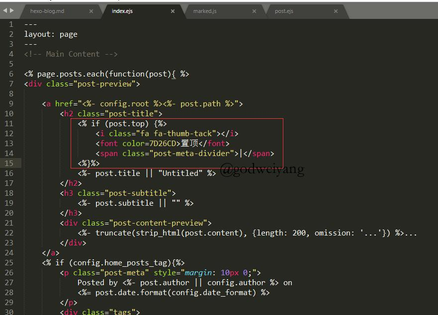
<% if (post.top) {%>
置顶
<%}%>< code>然后在你想置顶的文章md文件里，添加如下配置选项：
top: true添加网易云音乐BGM
写文章的时候，想插入一段BGM怎么办？
首先打开网易云网页版，找到想听的歌曲，然后点击生成外链：
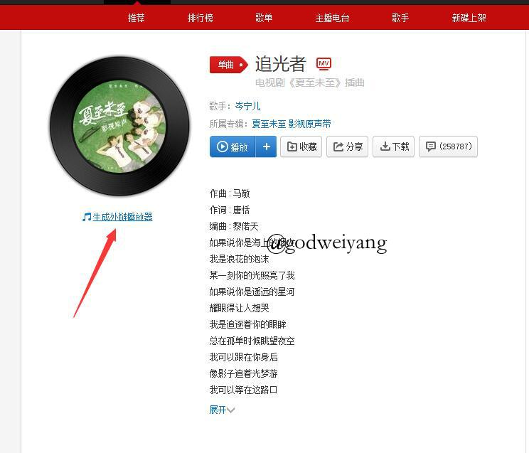
复制如下代码：
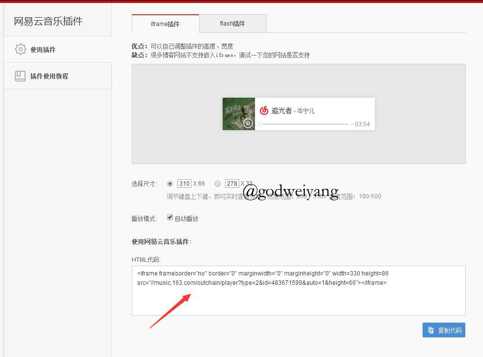
粘贴到文章里就行了，为了美观，设置一下居中，具体代码如下：
<div align="middle">这里粘贴刚刚复制的代码</div>添加访客人数统计和字数统计
我们使用一个国外的流量统计网站：gostats.com，首先注册一下。
然后自己添加网站地址，过程就不详细说了，然后点击Get counter code，选择一个自己喜欢的风格。
如下图所示，选择一个样式，选择HTML，生成代码：
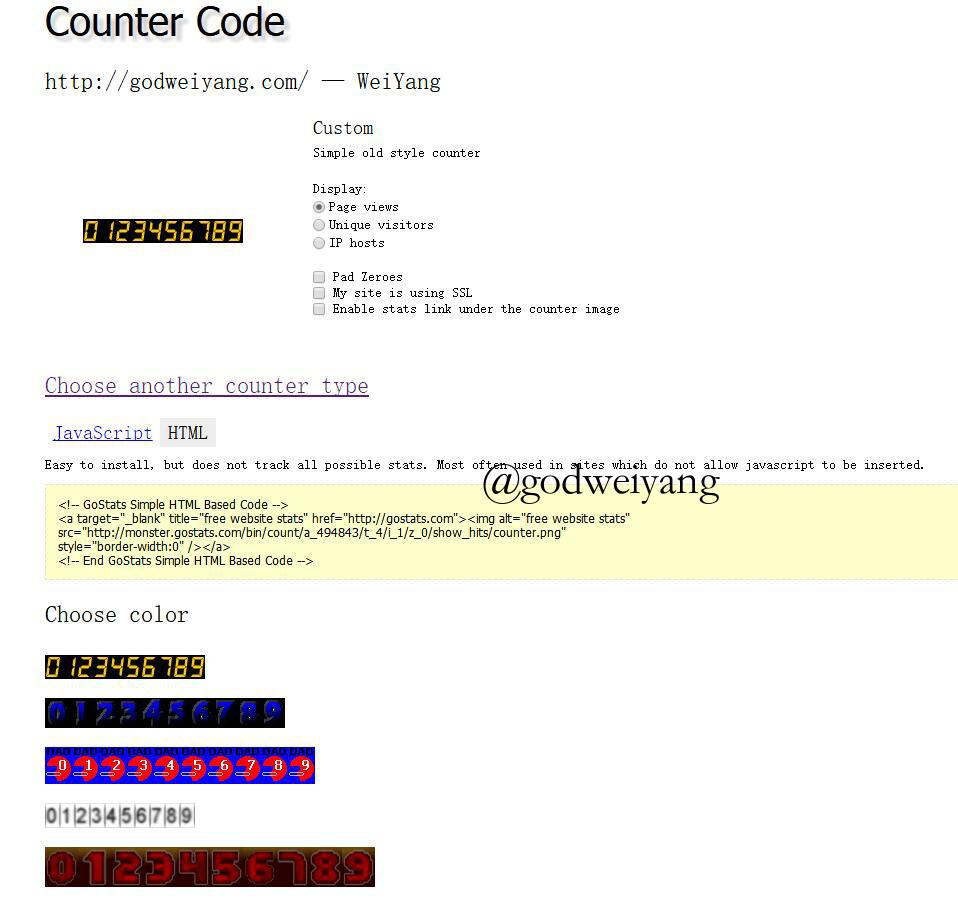
复制这段代码到D:\study\program\blog\themes\beantech\layout\_partial\footer.ejs，具体位置如下：
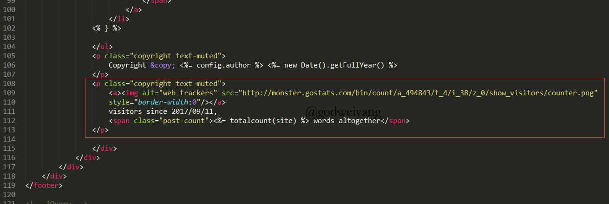
默认的代码和我图中不一样，因为我不想点击图片跳转到它统计网站的链接，可以模仿我的自行修改。
字数统计首先安装插件
npm i --save hexo-wordcount然后打开D:\study\program\blog\themes\beantech\layout\_partial\footer.ejs，添加如下代码：
<span class="post-count"><%= totalcount(site) %> words altogether</span>具体位置见上图。
一些注意事项
首先解释一下文章开头的配置，如下图所示：
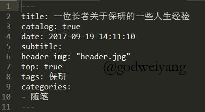
title: 文章标题
catalog: 是否显示段落目录
date: 文章日期
subtitle: 子标题
header-img: 顶部背景图片
top: 是否置顶
tags: 标签
categories: 分类网站图片都保存在D:\study\program\blog\source\img目录下，可以修改成自己的图片。
如果换一台电脑想迁移博客的话，最简单的方法就是把博客整个目录拷贝过去，就是这么暴力。
其他还有什么问题的话等我想起来了再继续添加，如果遇到问题欢迎联系我。